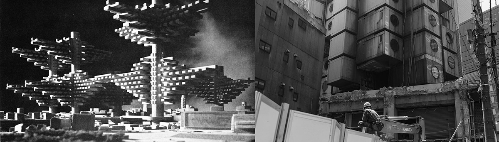

THE LOST FUTURES
The 20th century brought radical ambitions of architectural movements to reshape built environments at urban and planetary scales. Their realized models remain dominant as the preset backgrounds of contemporary imagination, where digital technology takes over the radical part of future progress. On the other hand, alternative visions of unbuilt projects and discontined prototypes are fading, not only in urban developments under practical constraints but also in artistic discussion with limited materials available to elaborate. By digitally reconstructing these visions and embedding them into large AI models, can AI dream of the lost futures?
 Left: City in the Air (Arata Isozaki 1962) representing the ambition of 1960s Metabolist Movement; Right: the Metabolist icon Nakagin Capsule Tower (Kisho Kurokawa 1972) being demolished in 2022.This project explores the lost futures of architecture and urbanism by training AI image generation models (Stable Diffusion v1.5/ SDXL)
with visionary concepts from the 20th century. The data curation involves collecting historical photos and
design documents, producing 3D models and renderings, and interpreting targeted concepts through image captioning. I primarily focus
on the adaptable ideas of buildings, infrastructures, and urban forms that are underrepresented in contemporary imagination and not well
understood by popular AI image generators (Stable Diffusion, Midjourney, etc.). Current experiments apply Dreambooth methods with
50-100 training images per concept.
As an open-ended research, the project experiments with various architectural themes, data curation methods, and AI training techniques.
The images below are generated by the training-in-progress models with simple textual prompting to test generic performance. Stay tuned for updates!